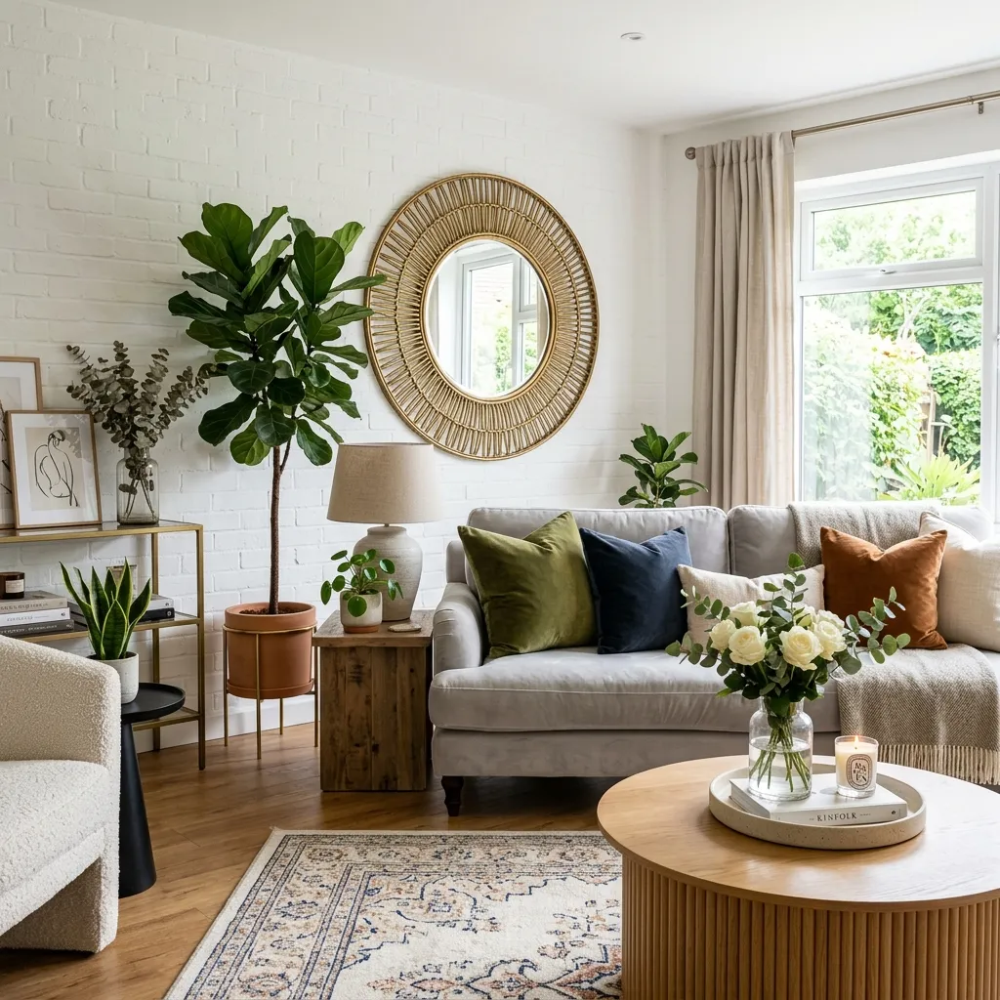
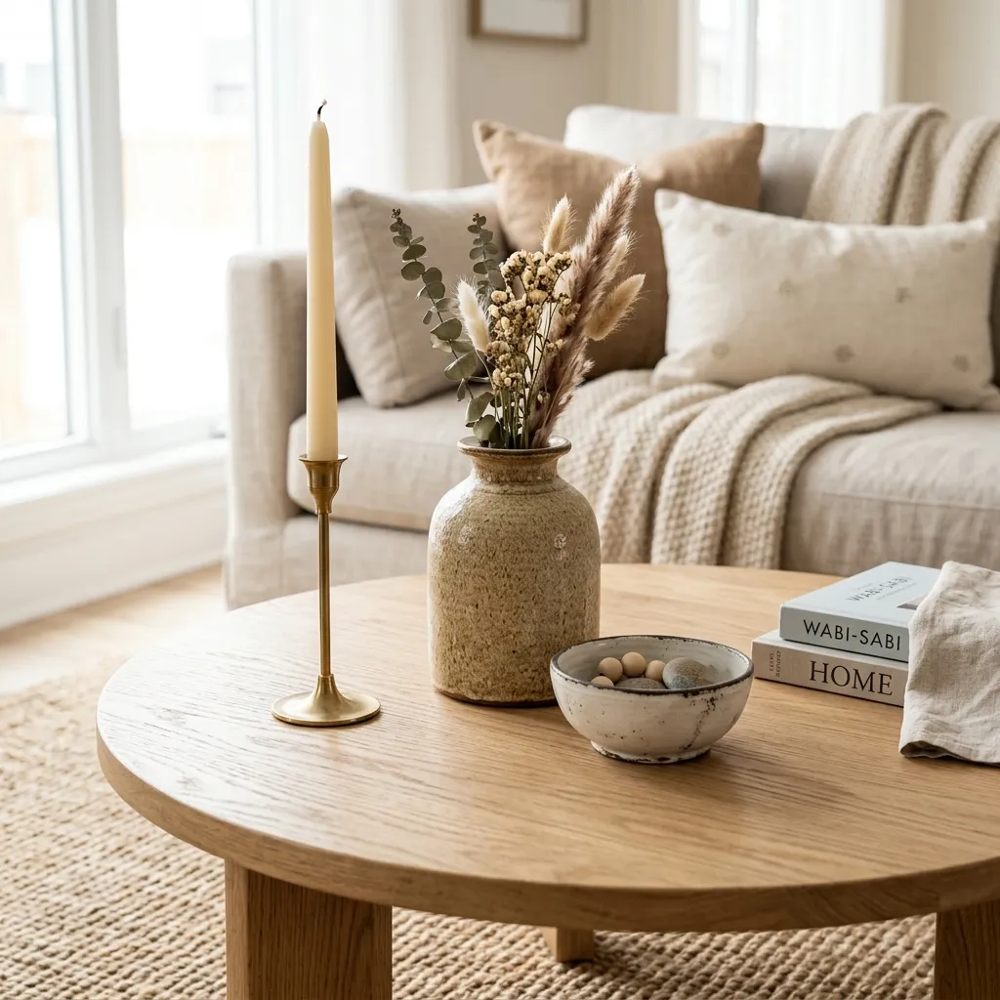

The Ultimate Guide to Elevating Your Home with Chic Decor & Accessories
Have you ever walked into a room and instantly felt a sense of calm, warmth, or sheer awe? Chances are, it wasn’t just the architecture or the expensive furniture that caught your attention. It was the details. The perfectly placed throw pillows, the statement mirror reflecting natural light, the subtle scent of a vanilla candle, and the carefully curated coffee table books.
Welcome to the world of home decor and accessories—the secret ingredients that turn a basic house into a chic living space.
If furniture is the skeleton of your home, then decor and accessories are its soul. They breathe life, personality, and warmth into empty rooms. Whether you have just moved into a new apartment or you are looking to refresh your current space without undergoing a massive renovation, mastering the art of accessorizing is your best strategy.
In this comprehensive guide, we will walk you through everything you need to know about elevating your home with chic decor and accessories. From identifying the must-have items to learning the golden rules of interior styling, get ready to transform your living space into a magazine-worthy haven.

Why Home Decor & Accessories Matter
Before we dive into what to buy, let's talk about why these pieces are so important. It is easy to overlook the small things when you are focused on buying a sofa or a dining table. However, leaving a room unaccessorized is like wearing a beautiful dress without any jewelry or shoes—it feels incomplete.
- They Express Your Personality: Your home should tell the story of who you are. Decor items like travel souvenirs, family heirlooms, and favorite art pieces showcase your unique taste and history.
- They Add Texture and Depth: A room with only solid, flat surfaces can feel cold and uninviting. Accessories introduce different materials—like woven baskets, velvet cushions, and sleek ceramics—that add visual weight and coziness.
- They Tie a Room Together: Have a blue rug and a beige sofa? A couple of patterned throw pillows that incorporate both blue and beige can seamlessly bridge the gap, making the design look intentional.
- They Are Easily Swappable: You probably won’t buy a new sofa every season, but you can easily swap out cushion covers or vases to reflect the changing seasons or your evolving style.
7 Essential Home Decor Accessories Every Chic Space Needs
If you are starting from scratch, walking into a home decor store can feel overwhelming. To help you build a solid foundation, here are the seven essential decor items that every chic living space needs.
1. Throw Pillows and Blankets: The Comfort Creators
Nothing screams "cozy" quite like a well-dressed sofa or bed. Throw pillows and chunky knit blankets are the easiest and most affordable way to inject color, pattern, and texture into a room.
PRO TIP
Don’t be afraid to mix and match. Pair a solid velvet pillow with a geometric print, and add a faux-fur throw blanket draped casually over the arm of your sofa. Remember to chop your pillows (giving them a light karate chop in the center) for that plush, designer look!
2. Area Rugs: Grounding Your Space
An area rug acts as an anchor for your furniture. It defines the space, especially in open-concept layouts, and provides a soft landing pad for your feet.
PRO TIP
Size matters immensely. The biggest mistake people make is buying a rug that is too small. Ensure that at least the front legs of your main furniture pieces (like your sofa and accent chairs) sit comfortably completely on the rug.
3. Statement Mirrors: Expanding Your Horizons
Mirrors are an interior designer’s best friend. Not only do they serve a functional purpose, but they also create the illusion of more space and bounce natural light around the room.
PRO TIP
Place a large statement mirror directly opposite a window to maximize the light in a dark room. An oversized, gold-framed floor mirror leaning against the wall instantly adds a touch of Parisian chic to any bedroom or living room.
4. Artwork and Wall Decor: Creating a Focal Point
Blank walls are a missed opportunity. Artwork is highly subjective, which makes it the perfect medium for personal expression. Whether it’s a large abstract canvas, a curated gallery wall of family photos, or a woven macrame wall hanging, art draws the eye upward and completes the room.
PRO TIP
When hanging art, aim for eye level (about 57 to 60 inches from the center of the artwork to the floor). If you are creating a gallery wall, lay the frames out on the floor first to finalize your arrangement before putting nails in the wall.
5. Ambient Lighting: Setting the Mood
If you rely solely on the overhead lighting that came with your house, you are doing your decor a disservice. Overhead lights can be harsh and sterile. Chic spaces rely on layered lighting.
PRO TIP
Incorporate a mix of floor lamps, table lamps, and wall sconces. Use warm white bulbs (around 2700K) to create a soft, inviting, and relaxing atmosphere in the evenings.
6. Indoor Plants and Botanicals: Bringing Nature Indoors
No room is truly complete without a touch of greenery. Plants bring life, purify the air, and add a vibrant pop of color that goes with absolutely any color palette.
PRO TIP
If you don’t have a green thumb, don't worry! High-quality faux plants have come a long way. Dried pampas grass or eucalyptus branches in a beautiful ceramic vase are incredibly trendy, require zero maintenance, and look stunning.
7. Decorative Trays and Books: The Art of Surface Styling
Coffee tables, consoles, and bookshelves can easily become magnets for clutter. The solution? Trays and coffee table books.
PRO TIP
Use a decorative tray to corral loose items like remote controls, coasters, and candles. Stack two or three visually appealing, large books and top them with a small sculptural object or a bowl. This instantly turns clutter into a styled vignette.
How to Style Accessories Like a Pro: The Golden Rules
Buying the right accessories is only half the battle; knowing how to arrange them is where the magic happens. Here are the golden rules of styling that professional interior designers swear by.
The Rule of Three
The human brain is naturally drawn to odd numbers, finding them more dynamic and visually appealing than even numbers. When grouping accessories, group them in threes (or fives, or sevens). For example, group a tall candlestick, a medium-sized vase, and a small decorative bowl together. This creates a visually pleasing triangle that keeps the eye moving.

Balance Scale and Proportion
If all your accessories are the exact same height and size, your arrangement will look flat and boring. Vary the heights and scales of your objects. Pair a tall, slender vase with a low, wide bowl. This creates visual peaks and valleys that are inherently interesting.
Mix Textures and Finishes
Contrast is the key to chic decor. If your table is made of smooth, glossy wood, avoid decorating it with only smooth, glossy objects. Instead, introduce a matte ceramic vase, a woven rattan basket, or a metallic brass figurine. The friction between different textures—hard and soft, matte and shiny, rough and smooth—gives a room its character.
Adapting Decor to Your Personal Style
Decor and accessories are highly adaptable. Here is how you can use them to complement the most popular interior design styles:
- Minimalist: Less is more. Focus on a few high-quality, impactful pieces. Opt for neutral tones, clean lines, and geometric shapes. A single, large abstract painting and a sculptural vase are all a minimalist console table needs.
- Bohemian (Boho): Embrace colors, patterns, and global influences. Layer multiple vintage rugs, load up your sofa with fringed and embroidered pillows, and hang plenty of macrame planters. Boho is all about a relaxed, collected-over-time vibe.
- Modern Contemporary: Keep it sleek but warm. Use metallic accents (like brushed brass or matte black), velvet pillows in rich jewel tones, and large, statement-making art pieces.
- Farmhouse/Rustic: Incorporate natural, weathered materials. Think distressed wood signs, galvanized metal buckets, chunky knit throws, and vintage glass jugs used as vases.
Budget-Friendly Decorating Hacks
Elevating your home doesn't mean you have to drain your bank account. Here are some incredibly effective ways to accessorize on a budget:
- Thrift and Vintage Shopping: Some of the most unique, high-quality decor items can be found at thrift stores, flea markets, or estate sales. Look for vintage mirrors, brass candlesticks, and unique pottery. They add a sense of history that mass-produced items just can't replicate.
- Upcycle What You Own: Have an old, ugly vase? Spray paint it with a textured matte spray to give it a trendy, terracotta look. Refresh old throw pillows by simply buying new covers instead of entirely new pillows.
- Forage for Nature: Nature provides free, beautiful decor. Snip some branches from your backyard, collect pinecones for a winter bowl display, or press flowers to frame as delicate wall art.
- DIY Artwork: You don’t need to be Picasso to create chic art. Buy a large blank canvas and create minimalist textured art using joint compound, or frame beautiful swatches of leftover wallpaper or fabric.
Common Decorating Mistakes to Avoid
Even with the best intentions, it’s easy to make a few styling missteps. Keep an eye out for these common mistakes:
- The Clutter Trap: There is a fine line between "accessorized" and "cluttered." If every single surface in your room is covered with objects, the space will feel chaotic. Remember to leave some negative (empty) space so the eyes can rest.
- Ignoring the Architecture: Work with your home's bones, not against them. If you have beautiful exposed brick or a stunning fireplace, let that be the focal point and keep the surrounding accessories minimal so they don't compete for attention.
- Buying Everything from One Store: While it might be convenient to buy the entire display window from your favorite home decor store, doing so will make your home look like a catalog. A chic living space looks curated over time. Mix high-end pieces with thrifted finds and items from different brands.
Seasonal Decor Swaps to Keep Your Home Fresh
One of the greatest joys of home accessories is how easily they allow you to transition your home through the seasons.
- Spring and Summer: Swap out heavy winter fabrics for light linen and cotton. Introduce pastel or vibrant citrus-colored throw pillows. Replace heavy, musky candles with fresh, floral, or ocean-breeze scents. Bring in fresh-cut flowers.
- Fall and Winter: It is all about creating warmth. Bring out the heavy knit throws, faux fur pillows, and velvet textures in rich, warm hues like terracotta, mustard, and deep green. Introduce candles with scents of cinnamon, cedar, and vanilla.
Conclusion
Decorating a home is not a race; it is an ongoing journey of curation and self-expression. By investing in essential decor accessories and mastering the basic rules of styling, you can easily elevate your home into a chic, comfortable living space that you are proud to show off.
Remember, there is no absolute "right" or "wrong" in home decor. If a piece brings you joy and makes your home feel more like you, then it is the perfect accessory. Start small, play around with different arrangements, and watch your house transform into a home.
Frequently Asked Questions (FAQs)
Q1: How do I choose the right color palette for my home accessories?
A: Start with your room’s foundational colors (your walls and large furniture). Choose one or two accent colors to weave throughout the room using accessories. A foolproof method is the 60-30-10 rule: 60% dominant color (walls), 30% secondary color (furniture), and 10% accent color (accessories like pillows, art, and vases).
Q2: Are matching furniture and decor sets outdated?
A: While not completely outdated, overly matching sets can make a room feel stiff and like a furniture showroom. Modern interior design favors a more "collected" look, where different textures, styles, and materials are mixed thoughtfully.
Q3: How many throw pillows should I put on my sofa?
A: For a standard three-seater sofa, 3 to 5 throw pillows are ideal. Using an odd number creates a more relaxed, inviting look. For a more formal, traditional look, you can use an even number (like 4) for perfect symmetry.
Q4: How can I decorate my rental apartment without damaging the walls?
A: Command hooks and adhesive strips are lifesavers for hanging art and mirrors in rentals. You can also use removable peel-and-stick wallpaper, layer large rugs over ugly carpeting, and use tension rods to hang curtains without drilling.
Q5: What is the most important accessory in a living room?
A: While it depends on the space, a large area rug is often considered the most critical accessory. It defines the seating area, absorbs sound, and sets the foundational color palette and texture for the rest of the room.